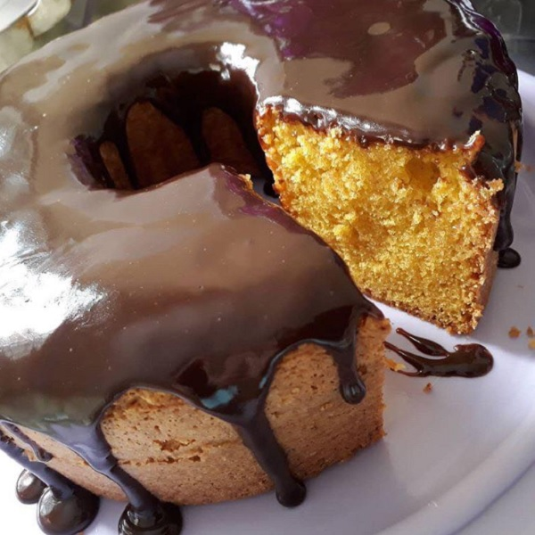

Bolo de Cenoura Fofinho

Ingredientes:
- 2 xicaras (chá) de cenoura picada
- 4 ovos
- 2 xicaras (chá) de farinha de trigo
- 1 xicaras (café) de fermento em pó
Cobertura
- 1 lata de leite condensado
- 1 caxinha de creme de leite
- 1 colher cheia de margarina
- 3 colheres cheias de chocolate em pó
Modo de preparo
- separe as claras das gemas
- bata as claras em neve e reserve.
- No liquidificador coloque a cenoura, o óleo e as gemas e bata por 5 minutos.
- Em uma tigela misture a farinha de trigo, o fermento e o açucar, misture bem.
- Depois junte os ingredientes batidos, misture bem, por último junte as claras em neve.
- Em uma assadeira untada leve para assar em forno médio, pré-quecido, por aproximadamente 40 minutos, ou até que fure com um palito e ele saia limpo.
Cobertura
Leve todos os ingredentes ao fogo e mexa até que desgrude da panela.
Voltar para a pagina inicial
Fonte:
https://receitas.band.uol.com.br/receita/bolo-de-cenoura-band-receitas-id-1268
Voltar para a pagina inicial